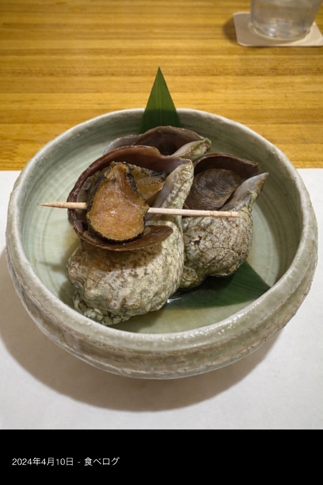
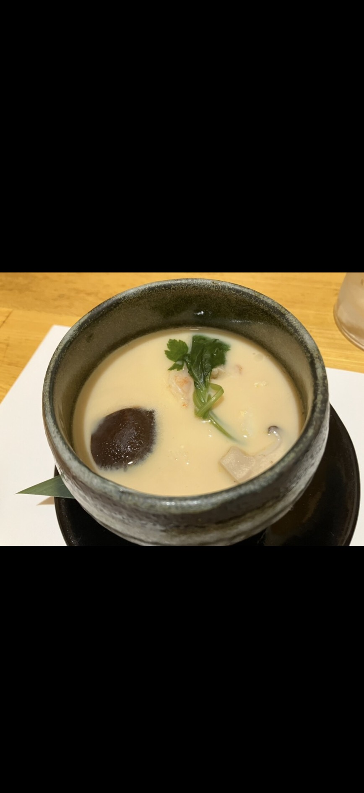
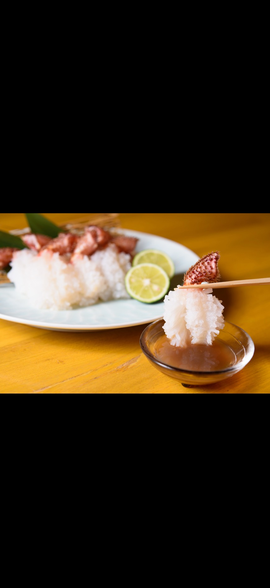
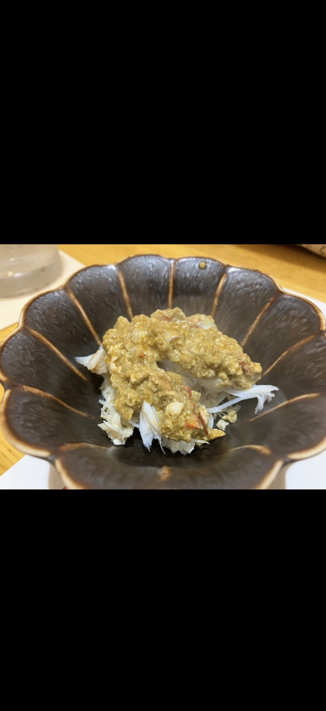
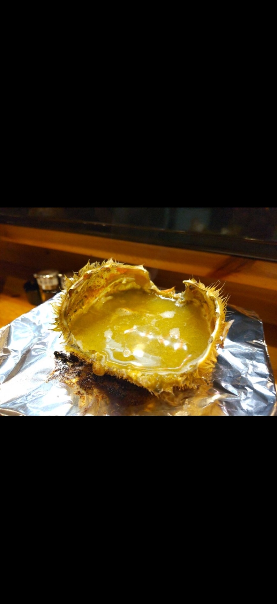
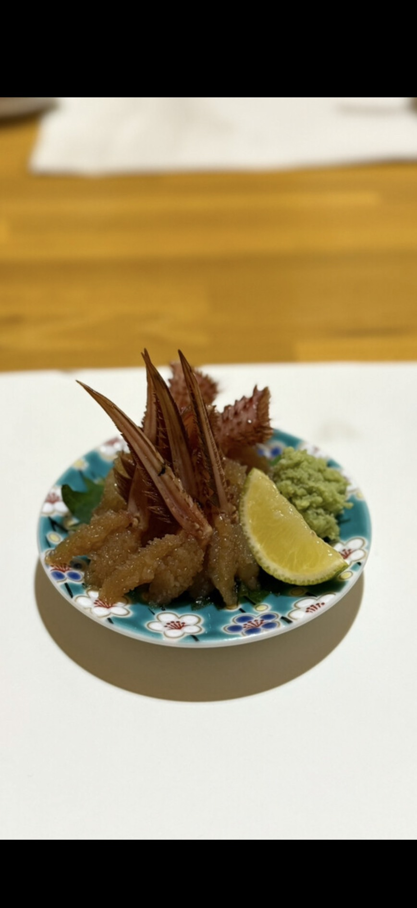
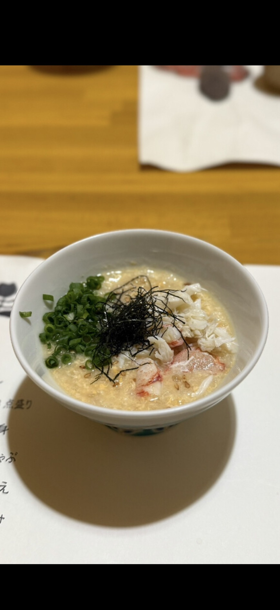
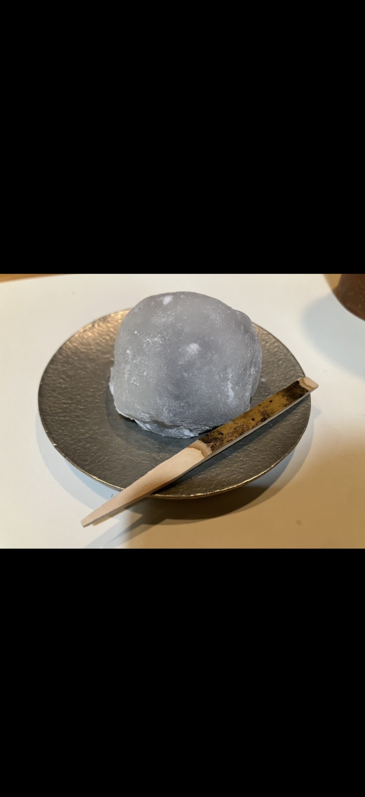

¥16,500
お一人様（税込）
per person (tax incl.)
每位（含税）
1인 (세금포함)
per person (tax incl.)
每位（含税）
1인 (세금포함)
※ 2名様より ／ 3日前までにご予約ください
※ Min. 2 guests ／ Reserve 3 days in advance
※ 2位起订 ／ 请提前3天预约
※ 2인부터 ／ 3일 전까지 예약
※ Min. 2 guests ／ Reserve 3 days in advance
※ 2位起订 ／ 请提前3天预约
※ 2인부터 ／ 3일 전까지 예약
一、先付け
Appetizer
二、毛蟹の茶碗蒸し
Crab Egg Custard
三、旬魚 お刺身3点盛り
Seasonal Sashimi
四、活カニ刺身（2本）
Live Crab Sashimi
五、カニ味噌しゃぶしゃぶ（2本）
Crab Miso Shabu-Shabu
六、カニ味噌共和え
Crab Meat × Miso Mix
七、甲羅酒
Hot Sake in Crab Shell
八、毛蟹醤油漬け
Soy-Marinated Crab
九、天ぷら
Crab & Vegetable Tempura
十、カニ雑炊
Crab Rice Porridge
十一、水菓子
Dessert
01
先付け
Appetizer — “Sakizuke”
前菜
전채

JAコースの始まりを告げる一品。季節により内容が変わります。（一例：煮つぶ — 北海道産のつぶ貝をじっくり煮込んだもの）
ENThe opening dish of the course. Changes with the season. (Example: Simmered Whelk “Nitsubu” — Hokkaido sea snails slowly simmered)
ZH开启套餐的第一道菜。内容随季节变化。（一例：煮海螺 — 北海道产海螺慢炖入味）
KO코스의 시작을 알리는 첫 요리. 계절에 따라 내용이 달라집니다. (예시: 니츠부 — 홋카이도산 골뱅이를 천천히 조린 것)
🐚 煮つぶの食べ方 / How to Eat Nitsubu
JA
- つぶ貝に楊枝が刺さっています
- 楊枝をくるくる回しながら身を引き出してください
- 煮汁にも旨みが凝縮されています — 一緒にお楽しみください
ZH
- 海螺上插着牙签
- 旋转牙签，将螺肉螺旋状拉出
- 炖汁也充满鲜味 — 请一起品尝
EN
- A toothpick is inserted into the whelk
- Twist the toothpick and gently pull the meat out in a spiral
- The simmering broth is packed with flavor — enjoy it together
KO
- 골뱅이에 이쑤시개가 꽂혀 있습니다
- 이쑤시개를 돌리면서 살을 나선형으로 빼내세요
- 조림국물에도 감칠맛이 가득 — 함께 즐기세요
02
毛蟹の茶碗蒸し
Horsehair Crab Chawanmushi — Savory Egg Custard
毛蟹茶碗蒸 / 蒸蛋羹
털게 차완무시 / 계란찜

JA毛蟹の殻から丁寧にとったお出汁で作る茶碗蒸し。卵は北海道・栗山町の「とうきび卵」を使用。中にはお野菜とカニの身が入っています。
ENSavory egg custard made with broth from crab shells. Eggs are premium “Tokibi Tamago” (corn-fed) from Kuriyama, Hokkaido. Contains vegetables and crab meat inside.
ZH用毛蟹壳熬制的高汤制成的蒸蛋羹。鸡蛋采用北海道栗山町的「玉米蛋」。里面有蔬菜和蟹肉。
KO털게 껍데기로 우려낸 육수로 만든 계란찜. 달걀은 홋카이도 쿠리야마초의 「옥수수 달걀」. 안에 채소와 게살이 들어있습니다.
🥄 食べ方 / How to Eat
JA
- 熱いのでお気をつけください
- スプーンでお召し上がりください
- 中のお野菜とカニの身も一緒にどうぞ
ZH
- 非常烫，请小心！
- 请用勺子食用
- 里面的蔬菜和蟹肉一起享用
EN
- Caution: very hot!
- Eat with the spoon provided
- Enjoy the vegetables and crab meat hidden inside
KO
- 매우 뜨거우니 조심하세요!
- 숟가락으로 드세요
- 안에 숨겨진 채소와 게살도 함께 즐기세요
03
旬魚 お刺身3点盛り
Seasonal Sashimi Trio
时令鱼刺身3种
제철 사시미 3종

JA北海道の海から届くその日一番の鮮魚を3種盛り合わせ。内容は日によって変わります。（一例：本鮪、ヒラメ、ニシンなど）お醤油とわさびをつけてお召し上がりください。
ENThree kinds of the freshest seasonal fish from Hokkaido’s seas. Selection changes daily. (Example: Bluefin Tuna, Flounder, Herring, etc.) Enjoy with soy sauce and wasabi.
ZH精选北海道当日最新鲜的3种时令鱼，拼盘呈上。内容每日不同。（一例：蓝鳍金枪鱼、比目鱼、鲱鱼等）请蘸酱油和芥末享用。
KO홋카이도 바다에서 온 당일 가장 신선한 생선 3종 모듬. 내용은 매일 달라집니다. (예시: 참다랑어, 광어, 청어 등) 간장과 와사비를 곁들여 드세요.
04
活カニ刺身（2本）
Live Crab Sashimi — 2 Legs per Person
活毛蟹刺身（2根）/ 每人2根
활 게 사시미（2개）/ 1인 2개

JA生きた毛ガニのお刺身です。蟹脚は4本届きますが、2本はお刺身、2本は次のしゃぶしゃぶでお召し上がりください。蟹酢は自家製の煎り酒とポン酢で割った特製ブレンドです。
ENFresh live horsehair crab sashimi. You will receive 4 legs — 2 for sashimi, enjoy the other 2 in the next shabu-shabu course. Served with “kani-zu” — a special blend of homemade iri-zake (sake-based sauce) and ponzu.
ZH活毛蟹的刺身。蟹腿共4根 — 2根用于刺身，剩余2根请在下一道涮涮锅中享用。搭配的蟹醋是自制的煎酒与柑橘醋调配而成。
KO살아있는 털게의 사시미입니다. 게 다리 4개가 나옵니다 — 2개는 사시미, 나머지 2개는 다음 샤브샤브에서 드세요. 게 식초는 자체 제조한 이리자케(술 기반 소스)와 폰즈를 블렌딩한 것입니다.
🦀 食べ方 — 2本それぞれの楽しみ方 / Each Leg Has Its Own Way!
JA
- 1本目：そのまま蟹酢につけてお召し上がりください
- 2本目：蟹酢の中にすだちを搾ってからお召し上がりください
ZH
- 第1根：直接蘸蟹醋食用
- 第2根：将酢橘汁挤入蟹醋中，再蘸着吃
EN
- Leg 1: Dip directly into the kani-zu sauce
- Leg 2: Squeeze sudachi citrus into the kani-zu, then dip
KO
- 1번째: 게 식초에 그대로 찍어 드세요
- 2번째: 게 식초에 스다치를 짜 넣고 찍어 드세요
05
カニ味噌しゃぶしゃぶ（2本）
Crab Miso Shabu-Shabu — 2 Legs per Person
蟹黄涮涮锅（2根）
게 미소 샤브샤브（2개）

JA飛騨コンロの上に温められた毛蟹の味噌が届きます。残りの蟹脚二本を蟹味噌の中でしゃぶしゃぶしてお楽しみください。
ENWarm crab miso arrives on a Hida tabletop grill. Swish the remaining 2 crab legs in the rich crab miso and enjoy!
ZH飛騨小炉上会送来已经加热好的毛蟹黄。将剩余的2根蟹腿在蟹黄中涮着享用。
KO히다 화로 위에 이미 데워진 게 미소(내장)가 도착합니다. 나머지 게 다리 2개를 게 미소 안에서 샤브샤브하여 즐기세요.
🦀 食べ方 — とても大事！ / Important!
JA
- 蟹味噌は温まってる状態で届きます
- 蟹脚2本を味噌の中に入れます
- 20〜30秒ほどしっかりと味噌を絡めてお召し上がりください
- 蟹味噌はこの後の「共和え」と「甲羅酒」にも使いますので、全部は使い切らないでください
ZH
- 蟹黄已经是加热好的状态
- 将2根蟹腿放入蟹黄中
- 涮约20~30秒，让蟹黄充分包裹蟹肉后食用
- 不要用完所有蟹黄！后面的「拌蟹肉」和「甲壳酒」还要用
EN
- The crab miso is already warmed and ready
- Place your 2 crab legs into the miso
- Cook for about 20–30 seconds, making sure the miso coats the meat well
- Don’t use all the miso! You’ll need some for the next dish (Tomo-ae) and Shell Sake
KO
- 게 미소는 이미 데워진 상태입니다
- 게 다리 2개를 미소 안에 넣으세요
- 약 20~30초 미소를 충분히 묻혀서 드세요
- 미소를 다 쓰지 마세요! 다음 「토모아에」와 「갑각주」에도 씁니다
06
カニ味噌共和え
Crab Meat Mixed with Crab Miso — “Tomo-ae”
蟹黄拌蟹肉
게 미소 토모아에

JA大将が丁寧にほぐした毛蟹の身が届きます。しゃぶしゃぶで残った蟹味噌を合わせて「共和え」にします。
ENA plate of carefully hand-picked crab meat arrives. The leftover crab miso from shabu-shabu completes this dish.
ZH手拆蟹肉登场。将涮涮锅中剩余的蟹黄全部浇上去，混合食用。
KO정성스럽게 발라낸 게살이 도착합니다. 남은 게 미소를 모두 부어 비벼 먹습니다.
🦀 食べ方 / How to Eat
JA
- 毛蟹のほぐし身のお皿が届きます
- 残った蟹味噌をすべてほぐし身の上にかけてください
- よく混ぜて「共和え」としてお召し上がりください
ZH
- 会送上一盘手拆蟹肉
- 将剩余的蟹黄全部浇在蟹肉上
- 充分搅拌后享用 — 这就是「共和え」（混合拌）
EN
- A plate of picked crab meat (hogushi-mi) is served
- Pour ALL the remaining crab miso over the crab meat
- Mix well and enjoy — this is “Tomo-ae” (together mix)
KO
- 손으로 발라낸 게살 접시가 나옵니다
- 남은 게 미소를 전부 게살 위에 부으세요
- 잘 섞어서 드세요 — 이것이 「토모아에」(함께 비비기)입니다
07
甲羅酒
Shell Sake — “Koura-zake” / Hot Sake Poured into the Crab Shell
甲壳酒
갑각주

JA蟹味噌を使い切った甲羅に、熱燗を注いで作る「甲羅酒」。甲羅に残った蟹味噌が溶け出し、世界に一つだけの贅沢な一杯になります。
ENAfter the miso is gone, hot sake (atsukan) is poured into the crab shell. The sake dissolves the remaining miso clinging to the shell, creating a one-of-a-kind cup.
ZH蟹黄用完后，将热清酒倒入蟹壳中。残留在壳上的蟹黄溶入酒中，成为独一无二的一杯。
KO게 미소를 다 먹은 후, 빈 껍데기에 뜨거운 사케를 부어 만드는 특별한 한 잔. 껍데기에 남은 게 미소가 녹아들어 세상에 하나뿐인 술이 됩니다.
🍶 楽しみ方 / How to Enjoy
JA
- 蟹味噌は全てしっかりとお召し上がりください
- 甲羅の中の味噌がなくなったら、熱燗（日本酒）をお持ちします
- 甲羅に熱燗を注いでいただいて残った蟹味噌を溶かしながら、蟹の甲羅の端を持って直接お飲みください
- お熱いので火傷に注意してください
- 蟹の旨みが凝縮された、通だけが知る至福の一杯です
ZH
- 请先将蟹黄全部吃完
- 蟹黄吃完后，会为您端来热清酒（日本酒）
- 将热酒倒入蟹壳中，溶化残留的蟹黄，手持蟹壳边缘直接饮用
- 非常烫，请小心烫伤！
- 行家才知道的至高享受 — 螃蟹精华浓缩的一杯
EN
- Please finish all the crab miso first
- Once the miso is gone, hot sake (atsukan) will be brought to you
- Pour the sake into the shell, dissolve the remaining miso, and drink directly from the edge of the shell
- Caution: very hot — be careful of burns!
- A connoisseur’s ultimate pleasure — the essence of crab in one cup
KO
- 게 미소를 먼저 전부 드세요
- 미소를 다 드시면, 뜨거운 사케(일본주)를 가져다 드립니다
- 사케를 껍데기에 부어 남은 미소를 녹이면서, 껍데기 가장자리를 잡고 직접 마시세요
- 매우 뜨거우니 화상에 주의하세요!
- 통만이 아는 최고의 즐거움 — 게의 감칠맛이 응축된 한 잔
08
毛蟹醤油漬け
Soy-Marinated Horsehair Crab — “Kegani Shoyu-zuke”
蟹肉酱油渍
게살 간장 절임

JA毛蟹の身を、自家製の醤油だれに漬け込んだもの。生のお刺身とはまた違う、味が染み込んだ深い味わいをお楽しみください。
ENCrab meat marinated in a house-made soy sauce blend. A completely different flavor from the raw sashimi.
ZH将蟹肉用自制酱油调味液腌渍入味。与生食刺身完全不同的深层风味。
KO게살을 자체 제조 간장 양념장에 절인 것. 날것 사시미와는 완전히 다른 깊은 맛.
🦀 食べ方 / How to Eat
JA
- すだちを搾ってカニにかけてください
- わさびを添えてお召し上がりください
- すでに味が入っているので、醤油は不要です
ZH
- 将酢橘汁挤在蟹肉上
- 配上芥末食用
- 已经入味，无需再蘸酱油
EN
- Squeeze sudachi citrus over the crab
- Add wasabi on top
- No soy sauce needed — the flavor is already infused
KO
- 스다치를 게살 위에 짜주세요
- 와사비를 올려서 드세요
- 이미 간이 되어 있으므로 간장은 불필요합니다
09
天ぷら
Crab & Seasonal Vegetable Tempura
天妇罗
텐푸라

JA毛蟹の天ぷらと、旬のお野菜の天ぷらの盛り合わせです。
ENCrispy tempura of horsehair crab and seasonal vegetables.
ZH毛蟹天妇罗和时令蔬菜天妇罗拼盘。
KO털게 텐푸라와 제철 채소 텐푸라 모듬.
🦀 食べ方 / How to Eat
JA
- 毛蟹の天ぷら：爪の先は硬いので食べられません
- 白い身の部分だけお召し上がりください
- お塩でも天つゆでも、お好みでどうぞ
ZH
- 蟹钳尖端很硬，不能食用！
- 只吃白色蟹肉部分
- 蘸盐或天妇罗汁，随您喜好
EN
- Crab claws: the tip is hard and cannot be eaten!
- Eat only the white meat part
- Dip in salt or tentsuyu sauce — your choice
KO
- 게 집게 끝부분은 딱딱해서 먹을 수 없습니다!
- 흰 살 부분만 드세요
- 소금 또는 텐츠유(튀김용 소스) 취향대로
10
カニ雑炊
Crab Rice Porridge — “Zosui” / The Grand Finale
蟹肉杂炊
게 죽

JA毛蟹の殻から丁寧にとったお出汁に、干し貝柱・桜エビを加えた贅沢な雑炊。卵は茶碗蒸しでも使用した、栗山町のとうきび卵を使っています。
ENRich porridge made with broth from the crab shells, enriched with dried scallops and sakura shrimp. The eggs are the same premium Tokibi Tamago used in the chawanmushi.
ZH用毛蟹壳熬制的高汤，加入干贝柱、樱花虾煮成的奢华粥品。鸡蛋同样采用茶碗蒸中使用的玉米蛋。
KO털게 껍데기로 우려낸 육수에 건조 관자·벚꽃 새우를 더한 호화 죽. 달걀은 차완무시에서도 사용한 옥수수 달걀.
🥄 食べ方 / How to Eat
JA
- スプーンでお召し上がりください
- 蟹の旨みをすべて吸い込んだ〆の一品です
- 最後の一滴まで残さずどうぞ
ZH
- 请用勺子食用
- 一整只蟹的精华，浓缩在每一粒米中
- 请喝到最后一滴！
EN
- Eat with the spoon provided
- This is the essence of the entire crab, concentrated in every grain
- Please enjoy every last drop!
KO
- 숟가락으로 드세요
- 게 한 마리의 정수가 쌀알 하나하나에 담겨 있습니다
- 마지막 한 방울까지 남기지 마세요!
11
水菓子
Seasonal Dessert — “Mizugashi”
水菓子 / 时令甜品
水菓子 / 계절 디저트 — “미즈가시”

JAコースの最後を飾る季節の甘味。内容は季節により変わります。
ENA seasonal sweet to close the course. The selection changes with the season.
ZH为套餐画上完美句号的时令甜品。内容随季节变化。
KO코스의 마지막을 장식하는 계절 디저트. 내용은 계절에 따라 달라집니다.
アレルギー情報 / Allergy Information / 过敏信息 / 알레르기 정보
🦀 甲殻類 Crustaceans
🐟 魚介 Fish
🥚 卵 Egg
🫘 大豆 Soy
🌾 小麦 Wheat
🦐 エビ Shrimp
「アレルギーがあります」
“I have an allergy”
“我有过敏”
“알레르기가 있습니다”